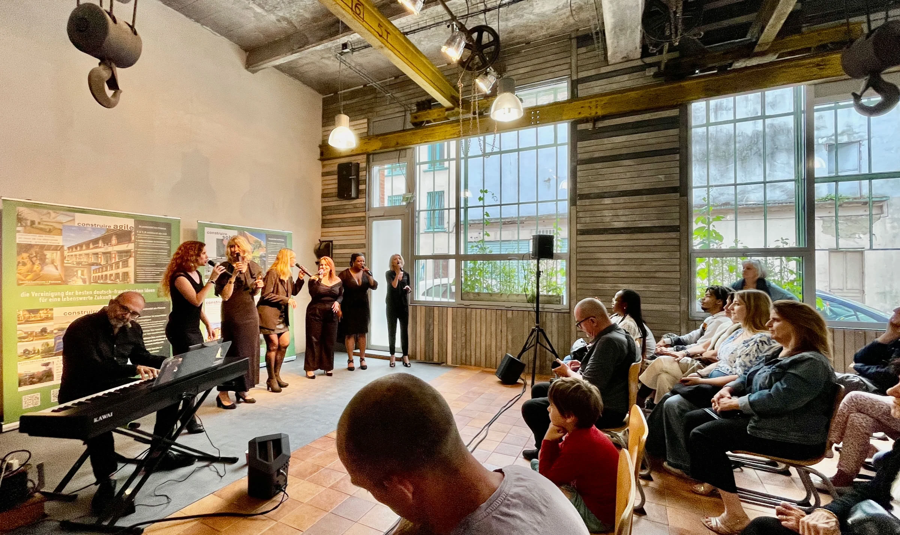

Des bâtiments qui poussent avec la nature.
Agence d’architecture à Vienne : réhabilitation, habitat et urbanisme, toujours avec le végétal au cœur du projet.
Agile
Des espaces qui évoluent avec leurs habitants, avec un minimum de travaux.
En savoir plus →Citoyenne
Des lieux de rencontre et d’entraide, à échelle humaine.
En savoir plus →Sobre
Low-tech, réemploi et matériaux naturels.
En savoir plus →Végétale
Des murs végétalisés aux toits verts.
En savoir plus →Nos réalisations
Logements, bureaux, équipements et études urbaines : dix-neuf projets, du sommet du Vercors aux berges du Rhône.


Le végétal au cœur de chaque projet
Îlots de fraîcheur, eau de pluie retenue, biodiversité et lien social : les plantes ne décorent pas, elles font partie de l’architecture. Nous aimons voir nos bâtiments changer au fil des saisons.

Une usine textile devenue bâtiment vivant
d’empreinte carbone sur le cycle de vie, par rapport à une construction neuve équivalente.
de matériaux en réemploi pour le coworking et le tiers-lieu.
économisée environ par mètre carré de surface de plancher.
d’abandon avant que l’ancienne usine ne retrouve logements, coworking et tiers-lieu.
Patrick Stefan Rheinert, architecte-ingénieur
Formé à la RWTH d’Aix-la-Chapelle puis à l’urbanisme à l’INSA de Lyon, il a créé son premier cabinet en 1989 et fondé architecture4future en 2020. Le premier siège était une Tiny House Urbaine ; l’agence vit aujourd’hui dans la grünboX-Vienne, une ancienne usine qu’elle a réhabilitée.
L’agence et l’équipe →
Des projets récompensés
Prix Économie Circulaire
Green Solutions Awards — grünboX-Vienne, finaliste du prix international
Lauréat du prix Plan Climat
Vienne Condrieu Agglomération
2e prix international Smart Cities
Catégorie Habitat, décerné par Le Monde à la grünboX-Vienne